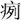

春秋公羊传卷八
庄公三
庄公十八年
春，王三月，日有食之。
夏，公追戎于济西。此未有言伐者，其言追何？大其为中国追也。此未有伐中国者，则其言为中国追何？大其未至而豫御之也。其言于济西何？大之也。
秋，有蜮。何以书？记异也。
冬十月。
庄公十九年
春，王正月。
夏四月。
秋，公子结媵陈人之妇于鄄，遂及齐侯、宋公盟。媵者何？诸侯娶一国，则二国往媵之，以侄娣从。侄者何？兄之子也。娣者何？弟也。诸侯壹聘九女，诸侯不再娶。媵不书，此何以书？为其有遂事书。大夫无遂事，此其言遂何？聘礼，大夫受命不受辞，出竟有可以安社稷利国家者，则专之可也。
夫人姜氏如莒。
冬，齐人、宋人、陈人伐我西鄙。
庄公二十年
春，王二月，夫人姜氏如莒。
夏，齐大灾。大灾者何？大瘠也。大瘠者何？也。何以书？记灾也。外灾不书，此何以书：及我也。
秋七月。
冬，齐人伐戎。
庄公二十二年
春，王正月，肆大省，肆者何？跌也。大省者何？灾省也。大省何以书？讥。何讥尔？讥始忌省也。
癸丑，葬我小君文姜。文姜者何？庄公之母也。陈人杀其公子御寇。
夏五月。
秋七月丙申，及齐高傒盟于防。齐高傒者何？贵大夫也。曷为就吾微者而盟？公也。公则曷为不言公？讳与大夫盟也。
冬，公如齐纳币。纳币不书，此何以书？讥。何讥尔？亲纳币，非礼也。
庄公二十三年
春，公至自齐。桓公之盟不日，其会不致，信之也。此之桓国何以致，危之也。何危尔？公一陈佗也。
祭叔来聘。
夏，公如齐观社。何以书？讥。何讥尔？诸侯越竟观社，非礼也。公至自齐。
荆人来聘。荆何以称人？始能聘也。
公及齐侯遇于谷。
萧叔朝公。其言朝公何？公在外也。
秋，丹桓宫楹。何以书？讥。何讥尔？丹桓宫楹，非礼也。
冬，十有一月，曹伯射姑卒。
十有二月甲寅，公会齐侯，盟于扈。桓之盟不日，此何以日？危之也。何危尔？我贰也。鲁子曰：“我贰者，非彼然，我然也。”
庄公二十四年
春，王三月，刻桓宫桷。何以书？讥。何讥尔？刻桓宫桷，非礼也。
葬曹庄公。
夏，公如齐逆女。何以书？亲迎礼也。
秋，公至自齐。八月丁丑，夫人姜氏入。其言入何？难也。其言日何？难也。其难奈何？夫人不偻，不可使入，与公有所约，然后入。
戊寅，大夫、宗妇觌，用币。宗妇者何？大夫之妻也。觌者何？见也。用者何？用者不宜用也。见用币，非礼也。然则曷用？枣栗云乎？腶脩云乎。
大水。
冬，戎侵曹，曹羁出奔陈。曹羁者何？曹大夫也。曹无大夫，此何以书？贤也。何贤乎曹羁？戎将侵曹，曹羁谏曰：“戎众以无义。君请勿自敌也。”曹伯曰：“不可”。三谏不从，遂去之，故君子以为得君臣之义也。
赤归于曹郭公。赤者何？曹无赤者，盖郭公也。郭公者何？失地之君也。
庄公二十五年
春，陈侯使女叔来聘。
夏五月癸丑，卫侯朔卒。
六月辛未朔，日有食之，鼓，用牲于社。日食则曷为鼓用牲于社？求乎阴之道也，以朱丝营社，或曰胁之，或曰为暗，恐人犯之，故营之。
伯姬归于杞。
秋，大水，鼓用牲于社于门。其言于社于门何？于社礼也，于门非礼也。
冬，公子友如陈。
庄公二十六年
公伐戎。
夏，公至自伐戎。
曹杀其大夫。何以不名？众也。曷为众杀之？不死于曹君者也。君死乎位曰灭。曷为不言其灭？为曹羁讳也。此盖战也，何以不言战？为曹羁讳也。
秋，公会宋人、齐人、伐徐。
冬十有二月癸亥朔，日有食之。
庄公二十七年
春，公会杞伯姬于洮。
夏六月，公会齐侯，宋公、陈侯、郑伯，同盟于幽。
秋，公子友如陈，葬原仲。原仲者何？陈大夫也。大夫不书葬，此何以书？通乎季子之私行也。何通乎季子之私行？辟内难也。君子辟内难而不辟外难。内难者何？公子庆父、公子牙、公子友皆庄公之母弟也。公子庆父、公子牙通乎夫人以胁公，季子起而治之，则不得与于国政，坐而视之则亲亲。因不忍见也，故于是复请至于陈而葬原仲也。
冬，杞伯姬来。其言来何？直来曰来，大归曰来归。
莒庆来逆叔姬。莒庆者何？莒大夫也。莒无大夫，此何以书？讥。何讥尔？大夫越竟逆女，非礼也。
杞伯来朝。
公会齐侯于城濮。